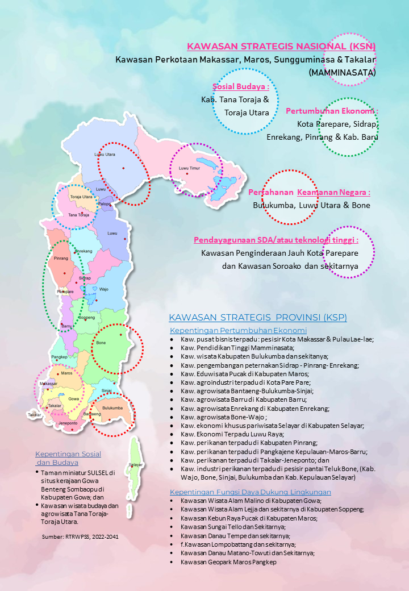
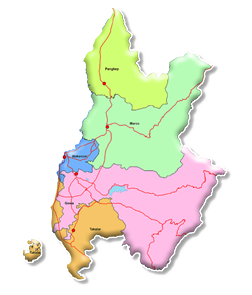
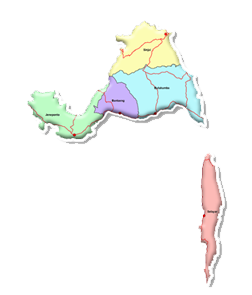
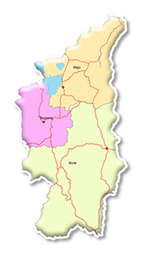

- Pembangunan Kawasan Makassar dilakukan untuk mendukung pemulihan pertumbuhan ekonomi Sulawesi Selatan
- Kawasan Perkotaan MAMMINASATA diharapkan sebagai pusat orientasi pelayanan berskala internasional dan sentra pengolahan komoditas sumberdaya alam
Peta Arah Pengembangan Wilayah
(1) Arah Strategi & Kebijakan Pegembangan Kawasan Makassar (Makassar, Takalar Gowa, Maros dan Pangkep

(2) Arah Strategi & Kebijakan Pengembangan Kawasan Bulukumba (Bulukumba, Jeneneponto, Bantaeng, Sinjai & Selayar)

- Kawasan Bulukumba diprioritaskan pada pengembangan komoditas unggulan khususnya perikanan tangkap dan peningkatan akses kelola kawasan hutan dengan skema perhutanan sosial
- Pengembangan kawasan dilakukan melalui pendekatan pemerataan dalam mendukung pengembangan pusat pertumbuhan, seiring dengan ditetapkannya KPPN Selayar dan KSPN Takabonerate sebagai Destinasi Pengembangan Pariwisata (DPP) Baru.
(3) Arah Strategi & Kebijakan Pengembangan Kawasan Watampone (Bone, Soppeng & Wajo)

- Kawasan Watampone sebagai pusat perdagangan dan jasa regional seka-ligus sebagai pusat pengembangan kawasan budidaya pertanian pangan untuk mendukung peran Sulsel sebagai kawasan lumbung pangan nasional.
- Penguatan peran pelabuhan dan kawasan logistik.
- Pengembangan Kawasan Watampone dilakukan dengan pengembangan komoditas unggulan pertanian tanaman pangan, perkebunan, peternakan, dan perikanan yang didukung oleh hilirisasi produk unggulan ber-basis sumberdaya alam, penguatan peran lembaga masyarakat serta usaha mikro dan kecil.
Wilayah Pengembangan IV

- Peningkatan kapasitas sumber daya manusia dan pendidikan.
- Pemberdayaan masyarakat dan pengembangan ekonomi kreatif.
- Pembangunan sistem informasi wilayah terpadu.
Wilayah Pengembangan V

- Pemanfaatan potensi pertanian dan perkebunan berkelanjutan.
- Peningkatan kualitas lingkungan hidup dan konservasi.
- Pengembangan ekonomi lokal berbasis potensi wilayah.